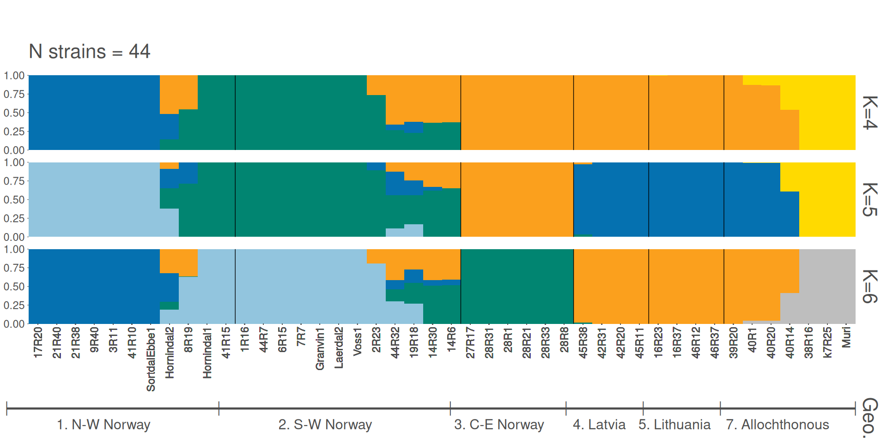
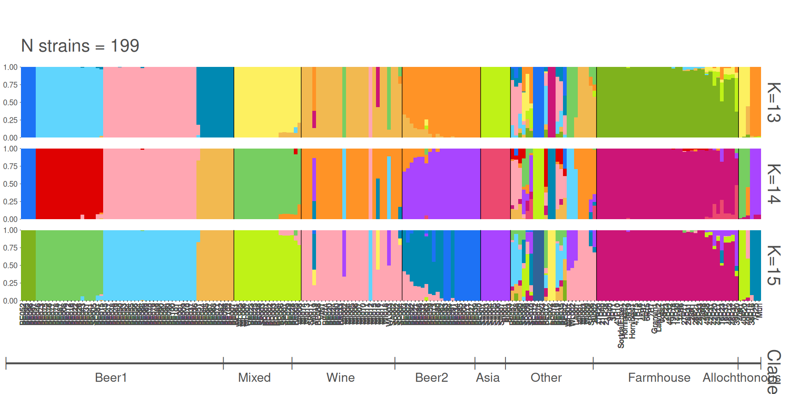

8 Figure 3
8.1 Figure 3 code
8.1.1 Panel A code
# mapping swap_yeasts
to_swap = data.frame(
old_name = c("21P1", "17P5", "45P5", "28P1", "28P6"),
new_name = c("21R40", "17R20", "45R38", "28R31", "28R1")
)
# import final calde list
final_clades = read.table(
"./data/p02-03/final_clades_for_pub.txt",
sep = "\t",
header = TRUE,
stringsAsFactors = FALSE
)
# load tree
best_tree = read.tree("./data/p02-03/genetrees.output.BS.best.2025.tre")
best_tree = as.phylo(best_tree)
best_tree$node.label = as.numeric(as.character(best_tree$node.label))
best_tree = ape::root(best_tree,
which(best_tree$tip.label %in% c("Skud")),
edgelabel = TRUE)
best_tree = ladderize(best_tree, right = TRUE)
# load annotations
tree_annot_raw = read.table("./data/p02-03/genetrees.output.BS.annot-PETER.txt",
sep = "\t",
header = TRUE,
stringsAsFactors = FALSE)
tree_annot_raw = data.frame(tree_annot_raw)
tree_annot = tree_annot_raw[, -which(colnames(tree_annot_raw) == "seq_name")]
tree_annot$Origin = factor(tree_annot$niche3,
levels = c("North-West Norway", "South-West Norway","Central-Eastern Norway",
"Latvia", "Lithuania", "Russia", ""))
colnames(tree_annot) = c("Strain", "Name", "Niche", "niche2", "niche3", "group", "Origin")
tree_annot$Niche = ifelse(tree_annot$Niche == "farmhouse", "Farmhouse", tree_annot$Niche)
for(k in 1:nrow(to_swap)){
tree_annot$Strain = stringr::str_replace(
tree_annot$Strain,
to_swap[k, "old_name"],
to_swap[k, "new_name"]
)
tree_annot$Name = stringr::str_replace(
tree_annot$Name,
to_swap[k, "old_name"],
to_swap[k, "new_name"]
)
best_tree$tip.label = stringr::str_replace(
best_tree$tip.label,
to_swap[k, "old_name"],
to_swap[k, "new_name"]
)
}
# merge with last clade grouping from 20250630
tree_annot = tree_annot %>%
dplyr::left_join(., final_clades, by = "Strain")
tree_annot$Clade = ifelse(tree_annot$Niche == "Farmhouse", "Farmhouse", tree_annot$Clade)
tree_annot$Clade = ifelse(
is.na(tree_annot$Clade) & tree_annot$group == 'beer2',
"Beer2", tree_annot$Clade
)
tree_annot$Clade = ifelse(
is.na(tree_annot$Clade) & tree_annot$group == 'wine',
"Wine", tree_annot$Clade
)
tree_annot$Clade = ifelse(
is.na(tree_annot$Clade) & tree_annot$group == 'asian',
"Asia", tree_annot$Clade
)
tree_annot$Clade = ifelse(is.na(tree_annot$Clade), "Other", tree_annot$Clade)
gpinfo = list(Beer1 = tree_annot$Strain[tree_annot$Clade == 'Beer1'],
Beer2 = tree_annot$Strain[tree_annot$Clade == 'Beer2'],
Wine = tree_annot$Strain[tree_annot$Clade == 'Wine'],
Asian = tree_annot$Strain[tree_annot$Clade == 'Asia'],
Farmhouse = tree_annot$Strain[tree_annot$Clade == 'Farmhouse'],
Mixed = tree_annot$Strain[tree_annot$Clade == 'Mixed'],
Other = tree_annot$Strain[tree_annot$Clade == 'Other'])
#relabel nodes
best_tree = treeio::rename_taxa(best_tree, data = tree_annot, Name, Strain)
best_tree = ggtree::groupOTU(best_tree, gpinfo)
# mark allhocthonous yeast
selected_labels = c("Muri", "7R25", "38R16", "40R14", "40R20", "40R1")
all_other_labels = best_tree$tip.label[-which(best_tree$tip.label %in% selected_labels)]
# plot
p = ggtree(best_tree,
#aes(color = group),
layout = "fan",
open.angle = 0) +
geom_tiplab2(aes(subset = isTip & label %in% all_other_labels),
color = "black",
offset = 3,
size = 2.75) +
geom_tiplab2(aes(subset = isTip & label %in% selected_labels),
color = "grey75",
offset = 3,
size = 2.75) +
scale_color_manual(values = c(2, 3, 4, 5, 6, '#000000', 7, 8))+
geom_nodepoint(aes(fill = cut(as.numeric(label),
c(0, 70, 90, 100))), shape = 21, size = 3) +
theme_tree(legend.position = c(0.1, 0.55)) +
scale_fill_manual(values = c("white", "grey", "black"),
guide = "legend",
name = "Bootstrap",
breaks = c("(90,100]", "(70,90]", "(0,70]"),
labels = expression(BP>=90,70 <= BP * " < 90", BP < 70))+
labs(title = 'Phylogenetic Tree', color = 'Clade') +
theme(plot.title = element_text(hjust = 0.5))
p = ggtree::flip(p, 258, 325)
p_tree = p +
new_scale_fill() +
ggtreeExtra::geom_fruit(data = tree_annot,
geom = geom_tile,
mapping = aes(y = Strain, fill = Clade),
color = NA, offset = 0.04, pwidth = 2) +
scale_fill_manual(values = c("#df536b", "#61d04f", "#28e2e5", "#2297e6", "#cd0bbc", "grey75", "#bcf60c")) +
new_scale_fill() +
ggtreeExtra::geom_fruit(data = tree_annot,
geom = geom_tile,
mapping = aes(y = Strain, fill = Origin),
color = NA, offset = 0.06, pwidth = 1.5) +
scale_fill_manual(values = c('#0571B0',
'#92C5DE',
'#018571',
'#FFDA00',
'#FBA01D',
'#A6611A',
'#ffffff')) +
labs(fill = "Origin") +
theme(legend.position = "bottom",
legend.box = "vertical",
legend.box.background = element_rect(colour = "white"),
legend.margin = margin(t = 0, unit = "cm"),
legend.key.size = unit(0.25, "cm"),
plot.title = element_blank())8.1.2 Panel B code
# with outside yeasts included in the gategories
diversity_table = data.frame(
"Subpopulation" = c("Farmhouse", "CE-Norway", "SW-Norway", "NW-Norway", "Lithuania", "Latvia", "Russia", "allochthonous yeast"),
"Number of Strains" = c("42*", "6", "11", "11", "3", "4", "4", "6"),
"Segregating Sites" = c("702,428", "100,194", "655,345", "129,478", "113,348", "124,295", "129,453", "615,038"),
"π" = c("6.64E-3", "3.99E-3", "1.06E-3", "4.12E-3", "4.85E-3", "5.03E-3", "4.72E-3", "1.61E-2")
)
colnames(diversity_table) = stringr::str_replace_all(colnames(diversity_table), "\\.", " ")
rownames(diversity_table) = NULL
div_table_with_out = ggpubr::ggtexttable(diversity_table, theme = ggpubr::ttheme("blank"), rows = NULL) %>%
ggpubr::table_cell_font(row = 3:9, column = 1:4, face = "italic") %>%
ggpubr::tab_add_hline(at.row = 1:2, row.side = "top", linewidth = 2) %>%
ggpubr::tab_add_hline(at.row = 9:9, row.side = "bottom", linewidth = 2)
# outside yeasts only separated
diversity_table = data.frame(
"Subpopulation" = c("Farmhouse", "CE-Norway", "SW-Norway", "NW-Norway", "Lithuania", "Latvia", "Russia", "allochthonous yeast"),
"Number of Strains" = c(38, 6, 10, 11, 3, 4, 1, 6),
"Segregating Sites" = c("231,211", "100,194", "152,561", "129,478", "113,348", "124,295", "-", "615,038"),
"π" = c("4.75E-3", "3.99E-3", "4.57E-3", "4.12E-3", "4.85E-3", "5.03E-3", "3.17E-3", "1.61E-2")
)
colnames(diversity_table) = stringr::str_replace_all(colnames(diversity_table), "\\.", " ")
div_table_without_out = ggpubr::ggtexttable(diversity_table, rows = NULL, theme = ggpubr::ttheme("blank")) %>%
ggpubr::tab_add_hline(at.row = 1:2, row.side = "top", linewidth = 2) 8.1.3 Panel C code
# import table
PCA_all = read.delim("./data/p02-03/kveiks_and_Gallone2016.fltr.bi.eigenvec", header = FALSE, sep = " ", stringsAsFactors = FALSE)
PCA_variance1 = read.delim("./data/p02-03/kveiks_and_Gallone2016.fltr.bi.eigenval", header = FALSE, sep = "\t", stringsAsFactors = FALSE)
# format
PCA_all$V1 = tree_annot_raw[match(PCA_all$V1, tree_annot_raw$seq_name), "Strain"]
PCA_all[42, "V1"] = "7R25"
row.names(PCA_all) = PCA_all$V1
PCA_all$niche1 = tree_annot[match(PCA_all$V1, tree_annot$Strain), "Clade"]
PCA_all$group = tree_annot[match(PCA_all$V1, tree_annot_raw$Strain), "group"]
PCA_all$niche1 = stringr::str_replace_all(PCA_all$niche1, "farmhouse", "Farmhouse")
PCA_all$niche1[is.na(PCA_all$niche1)] = "Farmhouse"
PCA_all$niche1 = ifelse(
PCA_all$V1 %in% c("k7R25", "Muri", "40R1", "40R20", "40R14", "38R16"),
"Allochthonous",
PCA_all$niche1
)
PCA_all_plot = ggplot2::ggplot(PCA_all, aes(x = V3, y = V4)) +
geom_point(aes(fill = niche1), size = 4, alpha = 0.5, shape = 21) +
#ggrepel::geom_text_repel(aes(label = V1), hjust = 0, vjust = 0, max.overlaps = 20, show.legend = FALSE) +
scale_fill_manual(values = c(
'salmon',
"#df536b", "#61d04f", "#28e2e5", "#2297e6", "#cd0bbc", "grey75", "#bcf60c"
)) +
guides(fill = guide_legend(nrow = 5, byrow = TRUE)) +
labs(x = paste0("PC1 (", round(PCA_variance1[1, 1], 2),"%)"),
y = paste0("PC2 (", round(PCA_variance1[2, 1], 2),"%)")) +
theme(title = element_blank(),
axis.text.x = element_text(size = 16),
axis.text.y = element_text(size = 16),
axis.title = element_text(size = 18),
legend.position = c(0.75, 0.75),
#legend.position = "bottom",
legend.box.background = element_rect(colour = "grey45"),
legend.key = element_blank(),
panel.background = element_rect(colour = "black", fill = NA),
panel.grid.major.x = element_blank(),
panel.grid.minor.x = element_blank(),
panel.grid.major.y = element_blank(),
panel.grid.minor.y = element_blank())8.1.4 Panel D code
# import table
PCA_kveiks = read.delim("./data/p02-03/kveiks.fltr.bi.eigenvec", header = FALSE, sep = " ", stringsAsFactors = FALSE)
PCA_variance = read.delim("./data/p02-03/kveiks.fltr.bi.eigenval", header = FALSE, sep = "\t", stringsAsFactors = FALSE)
for(k in 1:nrow(to_swap)){
PCA_kveiks$V1 = stringr::str_replace(
PCA_kveiks$V1,
to_swap[k, "old_name"],
to_swap[k, "new_name"]
)
PCA_kveiks$V2 = stringr::str_replace(
PCA_kveiks$V2,
to_swap[k, "old_name"],
to_swap[k, "new_name"]
)
}
# format
row.names(PCA_kveiks) = PCA_kveiks$V1
PCA_kveiks = PCA_kveiks %>%
dplyr::mutate(Strain = V2) %>%
dplyr::left_join(., tree_annot, by = "Strain") %>%
dplyr::mutate(
niche3 = ifelse(niche3 == "South-West Norway", "S-W Norway", niche3),
niche3 = ifelse(niche3 == "North-West Norway", "N-W Norway", niche3),
niche3 = ifelse(niche3 == "Central-Eastern Norway", "C-E Norway", niche3)
)
PCA_kveiks$niche3 = ifelse(
PCA_kveiks$V1 %in% c("k7R25", "Muri", "40R1", "40R20", "40R14", "38R16"),
"Allochthonous",
PCA_kveiks$niche3
)
PCA_kveiks_plot = ggplot2::ggplot(PCA_kveiks, aes(x = V3, y = V4)) +
geom_point(aes(fill = niche3), size = 4, alpha = 0.5, shape = 21) +
ggrepel::geom_text_repel(aes(label = V1), hjust = 0, vjust = 0, max.overlaps = 20, show.legend = FALSE) +
scale_fill_manual(values = c('salmon', '#018571', '#FFDA00', '#FBA01D', '#0571B0','#A6611A', '#92C5DE')) +
guides(fill = guide_legend(nrow = 4, byrow = TRUE)) +
labs(x = paste0("PC1 (", round(PCA_variance[1, 1], 2),"%)"),
y = paste0("PC2 (", round(PCA_variance[2, 1], 2),"%)")) +
theme(title = element_blank(),
axis.text.x = element_text(size = 16),
axis.text.y = element_text(size = 16),
axis.title = element_text(size = 18),
legend.position = c(0.75, 0.2),
#legend.position = "bottom",
legend.box.background = element_rect(colour = "grey45"),
legend.key = element_blank(),
panel.background = element_rect(colour = "black", fill = NA),
panel.grid.major.x = element_blank(),
panel.grid.minor.x = element_blank(),
panel.grid.major.y = element_blank(),
panel.grid.minor.y = element_blank())8.1.5 Panel E and F code
# all strains print sequence
sort_all = c(
"2509", "2587", "2588", "2589", "2503", "2538", "2541", "2542", "2544", "2546",
"2555", "X1018", "X1033", "X1062", "X1086", "X1113", "X2018",
"x1129", "X2013", "X5508", "2549", "X1052", "2502", "2504", "2505", "2506", "2507", "2510", "2511", "2512", "2513", "2522",
"2524", "2528", "2533", "2547", "2563", "2571", "2585", "2592", "2597", "2598", "X1002",
"X1022", "X1030", "X1157", "x1156", "2508", "2501", "2523", "2525", "2527",
"2535", "2550", "2591", "2599", "X1014",
"2519", "2578", "2579", "2583", "X1091", "X1111", "X2001",
"X5501", "X8003", "X8007", "X8008", "X8009", "X1011", "X4047", "X1120", "x1119", "X1008", "X4035",
"X4051", "X4046", "2534", "2536", "2560", "VIN7", "X1046", "X1075", "X1092", "X1127", "X1137", "X4002",
"X4025", "X4028", "X4031", "X4033", "X4040", "X4042", "X4043", "X4060",
"X4061", "X4065", "X4077", "X4", "X5002", "X5500", "X5506",
"X1005", "X1004", "2577", "X1076", "2554", "X1131", "2521",
"2516", "X1045", "2548", "2520","2551", "2552", "2572", "X1148",
"2553", "X1007", "X1031", "X1118", "X2003", "X2005",
"X5000", "X5003", "X5004", "X5009", "X5011", "X5013", "X6000", "X6004",
"2514", "2515", "2517", "2526", "2529", "2531", "2537", "2540", "2584",
"X1065", "2590", "X1071", "X1072", "X1155", "X2014", "X27", "X35", "X5503", "X4000", "X4009",
"X4037", "X5510", "X6003",
"17R20", "21R40", "21R38", "9R40", "3R11", "41R10", "SortdalEbbe1", "Hornindal2", "8R19", "Hornindal1", "41R15",
"1R16", "44R7", "6R15", "7R7", "Granvin1", "Laerdal2", "Voss1", "2R23", "44R32", "19R18", "14R30", "14R6",
"27R17", "28R31", "28R1", "28R21", "28R33", "28R8",
"45R38", "42R31", "42R20", "45R11", "16R23", "16R37", "46R12", "46R37",
"39R20", "40R1", "40R20", "40R14",
"38R16",
"k7R25", "Muri"
)
# kveiks print sequence
sort_kveik = c(
"17R20", "21R40", "21R38", "9R40", "3R11", "41R10", "SortdalEbbe1", "Hornindal2", "8R19", "Hornindal1", "41R15",
"1R16", "44R7", "6R15", "7R7", "Granvin1", "Laerdal2", "Voss1", "2R23", "44R32", "19R18", "14R30", "14R6",
"27R17", "28R31", "28R1", "28R21", "28R33", "28R8",
"45R38", "42R31", "42R20", "45R11", "16R23", "16R37", "46R12", "46R37",
"39R20", "40R1", "40R20", "40R14",
"38R16",
"k7R25", "Muri"
)
#### Gallone + kveiks
# import meanQ
ffiles = list.files(
path = "./data/p02-03/all_GalloneKveiks/",
all.files = FALSE,
full.names = TRUE
)
flist_all = pophelper::readQ(files = naturalsort::naturalsort(ffiles))
# add yeast names
yeast_names_all = read.delim(
"./data/p02-03/all_GalloneKveiks.lst",
header = FALSE,
stringsAsFactors = FALSE
)
yeast_names_all$V1 = stringr::str_remove_all(yeast_names_all$V1, "_all_sorted_picard_dedup_realigned_recalibrated_all")
yeast_names_all$V1 = stringr::str_remove_all(yeast_names_all$V1, "_all_sorted_picard_dedup_all")
yeast_names_all$V1 = stringr::str_remove_all(yeast_names_all$V1, "Sample_")
for(k in 1:nrow(to_swap)){
yeast_names_all$V1 = stringr::str_replace(
yeast_names_all$V1,
to_swap[k, "old_name"],
to_swap[k, "new_name"]
)
}
for(k in 1:length(flist_all)){
attributes(flist_all[[k]])$row.names = yeast_names_all$V1
flist_all[[k]] = flist_all[[k]][match(sort_all, rownames(flist_all[[k]])), ]
}
sort_all_print = sort_all
for(i in 1:length(sort_all_print)){
sort_all_print[i] = ifelse(
length(tree_annot[which(tree_annot$Name == stringr::str_replace_all(sort_all_print[i], "X", "x")), "Strain"]) > 0,
tree_annot[which(tree_annot$Name == stringr::str_replace_all(sort_all_print[i], "X", "x")), "Strain"],
sort_all_print[i]
)
}
for(k in 2:length(flist_all)){
rownames(flist_all[[k]]) = sort_all_print
}
# get populations annotations
onelabset_all = tree_annot[which(tree_annot$Name %in% stringr::str_replace_all(yeast_names_all$V1, "X", "x")), ]
onelabset_all = onelabset_all[match(stringr::str_replace_all(sort_all, "X", "x"), onelabset_all$Name), ]
### kveiks only
ffiles = list.files(
path = "./data/p02-03/onlyKveiks/",
all.files = FALSE,
full.names = TRUE
)
flist_kveik = pophelper::readQ(files = naturalsort::naturalsort(ffiles))
# add yeast names
yeast_names_kveik = read.delim(
"./data/p02-03/onlyKveiks.lst",
header = FALSE,
stringsAsFactors = FALSE
)
for(k in 1:nrow(to_swap)){
yeast_names_kveik$V1 = stringr::str_replace(
yeast_names_kveik$V1,
to_swap[k, "old_name"],
to_swap[k, "new_name"]
)
}
for(k in 1:length(flist_kveik)){
attributes(flist_kveik[[k]])$row.names = yeast_names_kveik$V1
flist_kveik[[k]] = flist_kveik[[k]][match(sort_kveik, rownames(flist_kveik[[k]])), ]
}
# get populations annotations
onelabset_kveiks = tree_annot[which(tree_annot$Name %in% yeast_names_kveik$V1), ]
onelabset_kveiks = onelabset_kveiks[match(sort_kveik, onelabset_kveiks$Name), ]
#------------------------------------------------------------------------------#
## 1.2 - Distruct plot Kveiks ####
# plot
mycolors = c("#FFDA00", "#FBA01D", "#A6611A", "#0571B0", "#92C5DE", "#018571")
shiny_col = c(
"#1D72F5","#DF0101","#77CE61", "#FF9326","#A945FF","#0089B2","#FDF060",
"#FFA6B2","#BFF217","#60D5FD","#CC1577","#F2B950","#7FB21D","#EC496F",
"#326397","#B26314","#027368","#A4A4A4","#610B5E"
)
onelabset_kveiks = onelabset_kveiks[, c("Origin"), drop = FALSE]
onelabset_kveiks$Origin = stringr::str_replace_all(onelabset_kveiks$Origin, "North-West Norway", "1. N-W Norway")
onelabset_kveiks$Origin = stringr::str_replace_all(onelabset_kveiks$Origin, "South-West Norway", "2. S-W Norway")
onelabset_kveiks$Origin = stringr::str_replace_all(onelabset_kveiks$Origin, "Central-Eastern Norway", "3. C-E Norway")
onelabset_kveiks$Origin = stringr::str_replace_all(onelabset_kveiks$Origin, "Latvia", "4. Latvia")
onelabset_kveiks$Origin = stringr::str_replace_all(onelabset_kveiks$Origin, "Lithuania", "5. Lithuania")
onelabset_kveiks$Origin = stringr::str_replace_all(onelabset_kveiks$Origin, "Russia", "6. Russia")
onelabset_kveiks[38:44, 1] = "7. Allochthonous"
colnames(onelabset_kveiks) = c("Geo.")
# sorted
p_kveiks = pophelper::plotQ(
pophelper::alignK(flist_kveik[c(4, 5, 6)]),
imgoutput = "join",
returnplot = TRUE, exportplot = FALSE,
showtitle = TRUE,
showsubtitle = TRUE,
titlesize = 24,
titlecol = "black",
subtitlesize = 16, subtitlevjust = -0.5, subtitlespacer = 16,
titlelab = "",
subtitlelab = "N strains = 44",
height = 15, width = 80, panelspacer = 0.35,
barbordercolour = "white", barbordersize = 0, basesize = 11,
divcol = "black", divtype = 1, divsize = 0.25,
grplab = onelabset_kveiks,
ordergrp = FALSE,
#subsetgrp = c("Central-E Norway", "S-W Norway", "N-W Norway", "Lithuania", "Latvia", "Russia", "NA farmhouse"),
selgrp = "Geo.",
grplabsize = 4, linesize = 0.8, pointsize = 4, grplabpos = 0.35,
grplabangle = 0, grplabjust = 0.6, grplabheight = 4000,
sortind = NA,
sharedindlab = TRUE,
showindlab = TRUE,
useindlab = TRUE,
#indlabcol = c("black", "red", "yellow"),
showlegend = FALSE, grpmean = FALSE,
splab = paste0("K=", sapply(flist_kveik[c(4, 5, 6)], ncol)), splabsize = 16,
showyaxis = TRUE, showticks = TRUE, ticksize = 0.25,
clustercol = c("#FFDA00", "#FBA01D", "#0571B0", "#018571", "#92C5DE", "grey"))
#clustercol = shiny_col)
grid.arrange(p_kveiks$plot[[1]])
#------------------------------------------------------------------------------#
## 1.3 - Distruct plot Gallone + Kveiks ####
onelabset_all = onelabset_all[!is.na(onelabset_all$Clade), ]
onelabset_all = onelabset_all[, "Clade", drop = FALSE]
rownames(onelabset_all) = NULL
onelabset_all[1:57, ] = "Beer1"
onelabset_all[58:75, ] = "Mixed"
onelabset_all[76:102, ] = "Wine"
onelabset_all[103:123, ] = "Beer2"
onelabset_all[124:131, ] = "Asia"
onelabset_all[132:154, ] = "Other"
onelabset_all[155:192, ] = "Farmhouse"
onelabset_all[193:198, ] = "Allochthonous"
# sorted
p_all = pophelper::plotQ(
pophelper::alignK(flist_all[c(13, 14, 15)]),
imgoutput = "join",
returnplot = TRUE, exportplot = FALSE,
showtitle = TRUE,
showsubtitle = TRUE,
titlesize = 24,
titlecol = "black",
subtitlesize = 16, subtitlevjust = -0.5, subtitlespacer = 16,
titlelab = "",
subtitlelab = "N strains = 199",
height = 15, width = 80, panelspacer = 0.35,
barbordercolour = "white", barbordersize = 0, basesize = 11,
divcol = "black", divtype = 1, divsize = 0.25,
grplab = onelabset_all,
ordergrp = FALSE,
#subsetgrp = c("Central-E Norway", "S-W Norway", "N-W Norway", "Lithuania", "Latvia", "Russia", "NA farmhouse"),
selgrp = "Clade",
grplabsize = 4, linesize = 0.8, pointsize = 4, grplabpos = 0.35,
grplabangle = 0, grplabjust = 0.6, grplabheight = 4000,
sortind = NA, indlabsize = 7,
sharedindlab = TRUE, showindlab = TRUE,
useindlab = TRUE,
showlegend = FALSE, grpmean = FALSE,
splab = paste0("K=", sapply(flist_all[c(13, 14, 15)], ncol)), splabsize = 16,
showyaxis = TRUE, showticks = TRUE, ticksize = 0.25,
clustercol = shiny_col)
grid.arrange(p_all$plot[[1]])
8.1.6 Merge
panel2 = cowplot::plot_grid(
div_table_with_out, PCA_all_plot, PCA_kveiks_plot,
nrow = 3,
rel_heights = c(1.5, 2.5, 2.5),
labels = c("B", "C", "D")
)
final_plot = cowplot::plot_grid(
cowplot::plot_grid(
p_tree, panel2,
nrow = 1,
rel_widths = c(0.6, 0.43),
labels = c("A", NA)
), p_all$plot[[1]], p_kveiks$plot[[1]],
nrow = 3,
rel_heights = c(5, 2.75, 2.25),
labels = c(NA, "E", "F")
)8.2 Figure 3 plot
8.3 Session Information
Note
R version 4.3.2 (2023-10-31)
Platform: x86_64-conda-linux-gnu (64-bit)
Running under: openSUSE Tumbleweed
Matrix products: default
BLAS/LAPACK: /home/andrea/miniforge3/envs/moai/lib/libmkl_rt.so.2; LAPACK version 3.9.0
locale:
[1] LC_CTYPE=en_US.UTF-8 LC_NUMERIC=C
[3] LC_TIME=it_IT.UTF-8 LC_COLLATE=en_US.UTF-8
[5] LC_MONETARY=en_US.UTF-8 LC_MESSAGES=en_US.UTF-8
[7] LC_PAPER=en_US.UTF-8 LC_NAME=C
[9] LC_ADDRESS=C LC_TELEPHONE=C
[11] LC_MEASUREMENT=en_US.UTF-8 LC_IDENTIFICATION=C
time zone: Europe/Brussels
tzcode source: system (glibc)
attached base packages:
[1] grid stats graphics grDevices utils datasets methods
[8] base
other attached packages:
[1] treeio_1.26.0 stringr_1.5.1 reshape_0.8.9 RColorBrewer_1.1-3
[5] pophelper_2.3.1 naturalsort_0.1.3 gridExtra_2.3 ggtreeExtra_1.12.0
[9] ggtree_3.10.1 ggplot2_3.5.1 ggnewscale_0.5.0 aplot_0.2.4
[13] ape_5.8-1
loaded via a namespace (and not attached):
[1] gtable_0.3.6 xfun_0.50 htmlwidgets_1.6.4
[4] ggrepel_0.9.6 rstatix_0.7.2 lattice_0.22-6
[7] vctrs_0.6.5 tools_4.3.2 generics_0.1.3
[10] yulab.utils_0.2.0 parallel_4.3.2 tibble_3.2.1
[13] pkgconfig_2.0.3 ggplotify_0.1.2 lifecycle_1.0.4
[16] compiler_4.3.2 farver_2.1.2 munsell_0.5.1
[19] combinat_0.0-8 carData_3.0-5 ggfun_0.1.8
[22] htmltools_0.5.8.1 yaml_2.3.10 lazyeval_0.2.2
[25] Formula_1.2-5 pillar_1.10.1 car_3.1-3
[28] ggpubr_0.6.0 tidyr_1.3.1 abind_1.4-8
[31] nlme_3.1-167 tidyselect_1.2.1 digest_0.6.37
[34] stringi_1.8.4 dplyr_1.1.4 purrr_1.0.2
[37] labeling_0.4.3 cowplot_1.1.3 fastmap_1.2.0
[40] colorspace_2.1-1 cli_3.6.3 magrittr_2.0.3
[43] patchwork_1.3.0 label.switching_1.8 broom_1.0.7
[46] withr_3.0.2 scales_1.3.0 backports_1.5.0
[49] rmarkdown_2.29 ggsignif_0.6.4 evaluate_1.0.3
[52] lpSolve_5.6.23 knitr_1.49 gridGraphics_0.5-1
[55] rlang_1.1.5 Rcpp_1.0.14 glue_1.8.0
[58] tidytree_0.4.6 jsonlite_1.8.9 R6_2.5.1
[61] plyr_1.8.9 fs_1.6.5